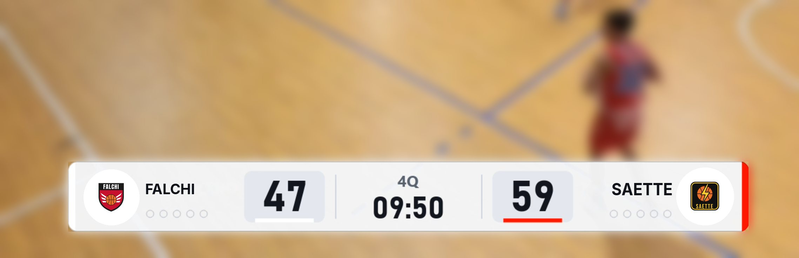
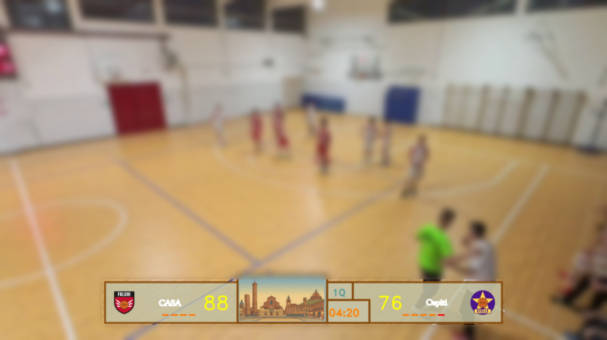
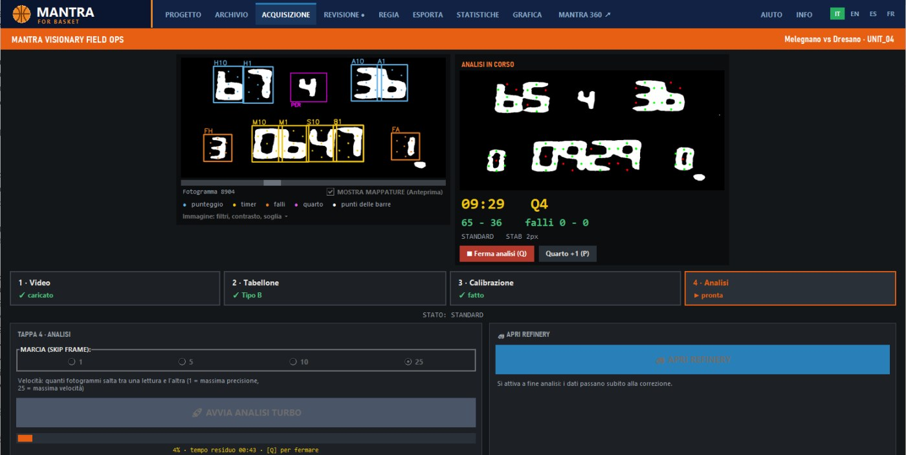
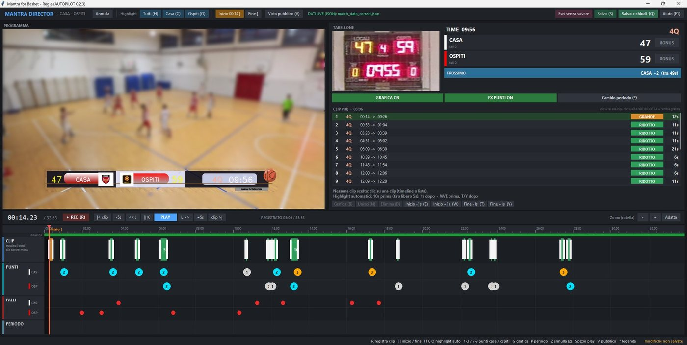
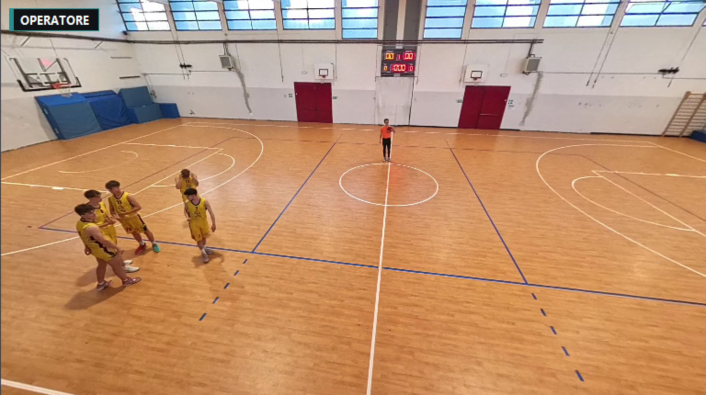
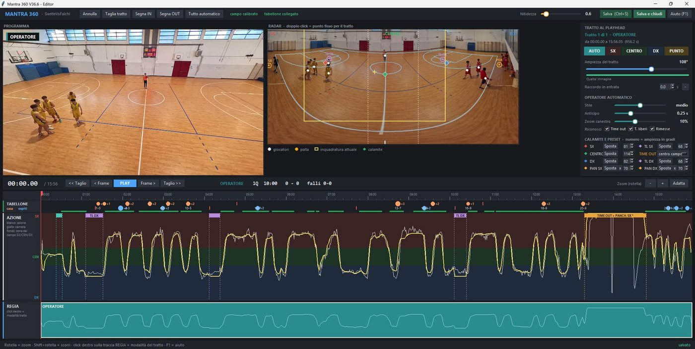
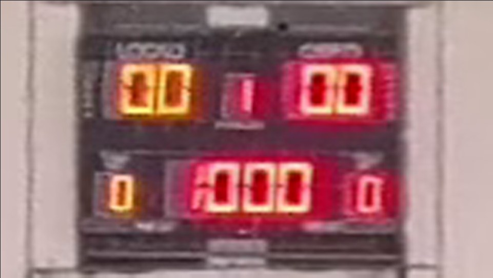

Mantra Basket Software
Mantra
IT
EN
ES
FR

Mantra
for Basket
Alpha · 1.0
GEOSCANNER
·
REFINERY
·
STUDIO
·
SKINMAPPER
·
AUTOPILOT
·
BAKE
·
·
Mantra
360
Alpha · 1.0
·
Mantra for Basket
Mantra 360

screenshots/mfb-1.jpg

screenshots/mfb-2.jpg

screenshots/mfb-3.jpg

screenshots/m360-1.jpg

screenshots/m360-2.jpg

screenshots/m360-3.jpg
Q1
Q2
Mantra 360
Q3
Geoscanner + Refinery
Q4
Mantra for Basket
Mantra
360
Mantra
for Basket
FAQ
Mantra for Basket
Mantra 360
MantraSoftwareHouse [at] proton.me